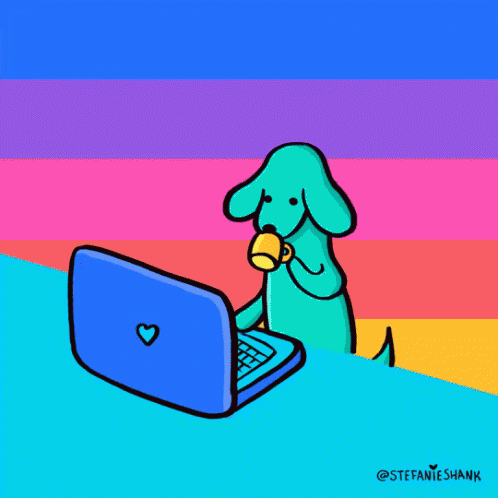
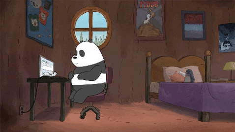

OPINION
COMPUTACION BASICA II
Mi experiencia este parcial fue muy buena, ya que aprendi demasiadas cosas que jamas imagine que iba a aprender, la mestra nos brindo muchas herramientas para poder hacer nuestras practicas lamentablemente una pandemia interrumpieron nuestras clases presenciales y si fue algo que me afecto ya que no aprendia comno al estar en eun salon y podr pregunatar a la maestra a mis compañeros. fueron temas bastantes complesjos para mi persona pero gracias que la maestra sinse preocupaba y nos mandaba videos y asi y podia ver videos en youtube. con eso me ayude bastate y es asi como pude elaborar mi proyecto final.
 